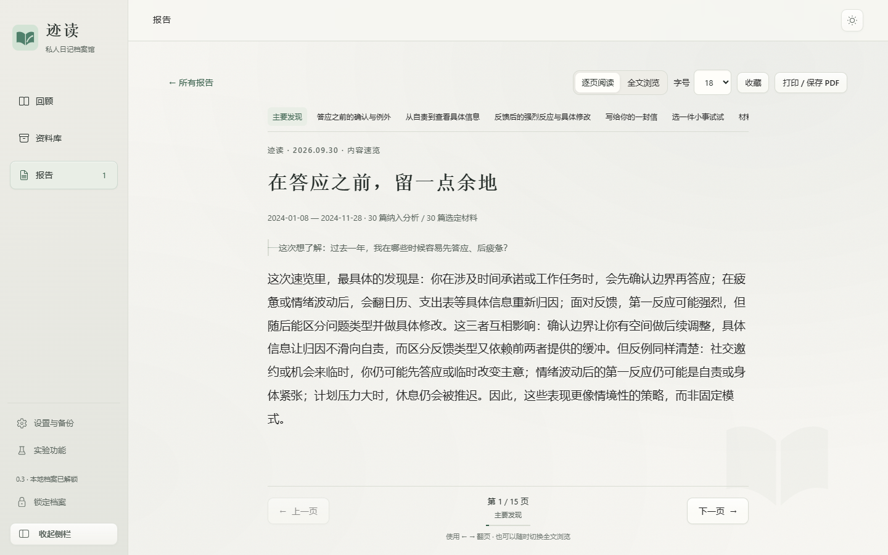
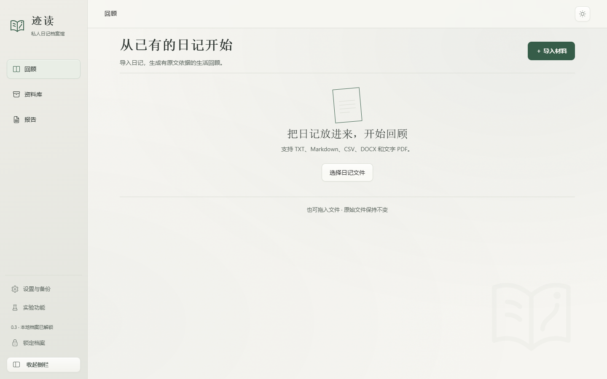

迹读 · Windows 免费试用版
让写下的生活，
有迹可读。
写了很久的日记，值得认真回看。迹读从已有记录中整理线索，生成可以返回原文核对的生活回顾。
适用于 Windows x64 · 免费试用 · 手机版即将上线

01 / 从记录到理解
你不必重新开始记录。
从已经写下的开始。
迹读不是新的日记本。继续使用你熟悉的工具，把已有的 TXT、Markdown、CSV、DOCX 或文字版 PDF 导入即可。原文件保持不变。
02 / 一次清楚的回顾
从一堆文字，
到可核对的发现。
- 01
整理材料
识别日期、正文与非原创内容，让你先看清这次分析用了哪些日记。
- 02
看见反复与变化
报告按实际材料生成主题，区分支持线索、反向证据与尚待验证的解释。
- 03
回到写下的那一天
点击证据，返回对应日记核对上下文。建议也会说明适用原因与可尝试的小步骤。
03 / Windows 桌面版
让阅读，
回到阅读本身。
在电脑上导入、分析和阅读。报告可以逐页查看，也能切换为全文浏览；重要判断附带原文线索，而不是只留下一个结论。
每份回顾的主题与深度，取决于你提供的记录。

04 / 你的记录，边界清楚
留在本机的，
由你保管。
日记、报告和模型密钥保存在本机加密档案。原文件只读导入；本地档案密码不会上传。
使用自带云端 API 时
分析副本会发送给你选择的模型服务商，不经过迹读的账号服务。发送前可检查副本；自动隐私替换可能漏检。
需要保存或迁移时
你可以导出加密备份。请妥善保管本地档案密码，报告也可打印或保存为 PDF。
平台进度
先在电脑上，
好好读一遍。
Windows 版 · 现可下载
Windows x64 免费试用版已开放。
手机版 · 即将上线
仍在 HTTPS 部署与实体手机验收中，敬请期待。
迹读 0.3.0 · Windows x64
再读一次，
看见新的自己。
迹读免费试用版不需要账号或兑换码。你可以连接自己的模型 API，也可以使用本机 Ollama；云端模型服务商可能另行收取 API 费用。
当前为未签名的预发布安装包。Windows 可能显示来源提示，请核对下载地址和校验值，不要关闭安全软件。首次使用后请导出加密备份。
SHA-256 6013b449976b4635f3e9532e429c127a523f8a079fb7befe18514a5e479cb7e6
使用前了解
几个常见问题。
免费试用需要付款吗？
迹读不收取费用，也不需要兑换 CDK。若使用自己的云端模型 API，费用由你与该模型服务商结算。
迹读会替代我原来的日记软件吗？
不会。你继续在熟悉的工具里记录，迹读负责导入已有材料、整理和回顾。
报告可以当作人格判断或诊断吗？
不能。报告基于现有记录提出可核对的观察和候选解释，不提供心理或医学诊断，也不替你做重大决定。
可以获得迹读应用源码吗？
目前不提供。公开仓库仅存放这个下载页与安装包入口；免费试用不代表开源。